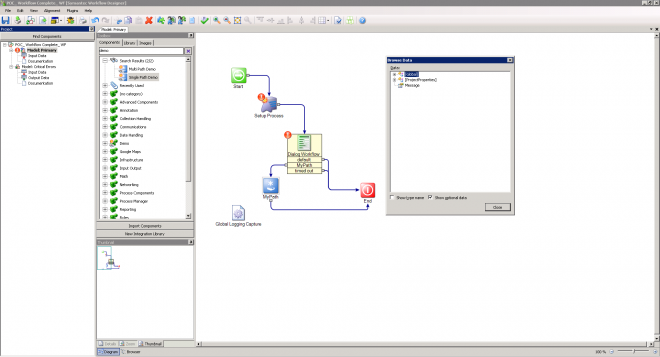
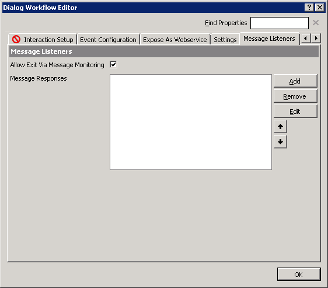
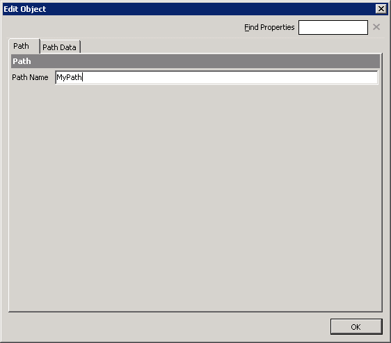
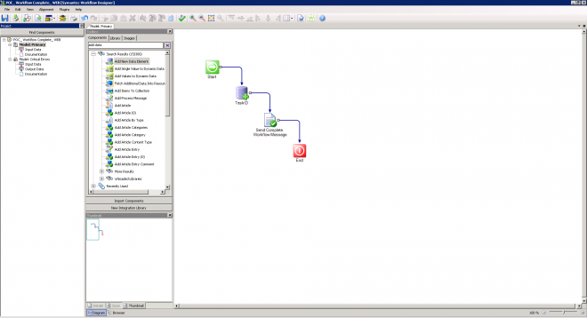
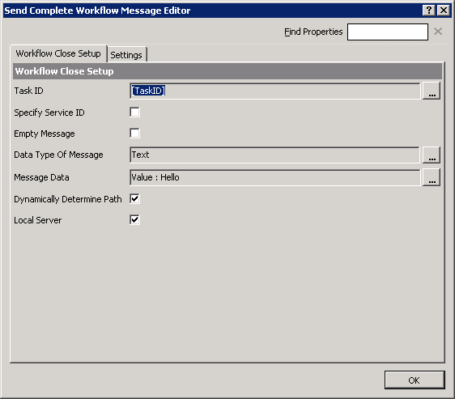
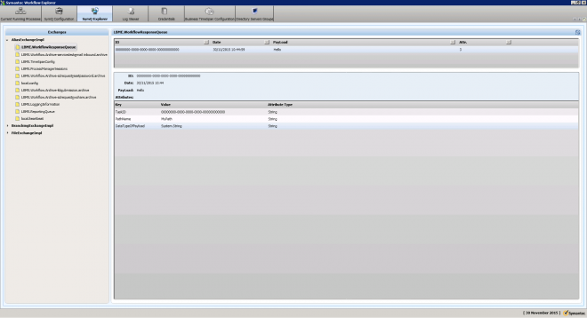
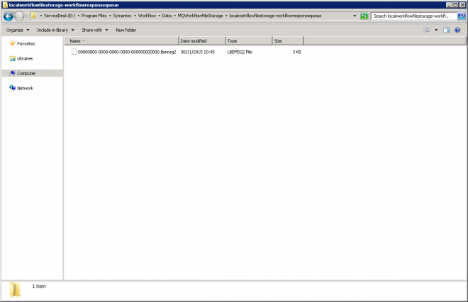
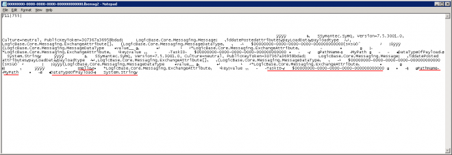
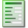

In this Article I will explain how to use the 'SendCompleteWorkflowMessage' to hook into a Dialog Workflow via the Event Listeners.
I'm assuming that you already have a Workflow written that is creating Tasks via the 'Dialog Workflow' component.
You could then have another Project (Web Forms) that get's a list of User's Tasks and displays them for actioning, or set up an automated method of send these messages, it's your choice.
As a very simple example we have a Workflow with a Task, once we set up an Event Listener that path will then be available to us for actioning, with the Message data for use.

Double click on your Dialog Workflow and click on the 'Message Listeners' tab,
Tick the "Allow Exit Via Message Monitoring"
Next click on Add.

Give your Path a name. I've called mine the very inventive "MyPath"

We need some Path Data to work with so click on that tab.
Untick "Empty Message"
I'm just using 'Text' here but yours could be a newly defined type or one from your Workflow Process.

Now if you close the Dialog Workflow you will now have a new Path coming out of the DW and if you browse the data your 'Message' variable will be available to you. You might want to add a Process Message to your Process or use the data passed to determine an outcome.
Now how do we send this information?
In your other Workflow you add the 'Send Complete Workflow Message'

You will need a Task ID that the Process is currently at.
You then chose the Data Type the Message is expecting, see the Message Listener of the Task.
Then the Message Data that is used in your Process.

You could change the Server and/or pick the Path you wish to take, you could set the "MyPath". Workflow should know which path based on the message you are sending.
You may find yourself wondering where is this data?
You can obtain it from two places.
Open Symantec Workflow Explorer
(Start Menu\Programs\Symantec\Workflow Designer\Tools\ Symantec.Explorer.exe)
SymQ Explorer
AliasExchangeImpl
Lbme.workflowresponsequeue

You can see the TaskID, the Path, the Message, a view useful and easy way to view.
Files on the Server
[Install Drive]:\program files\Symantec\Workflow\Data\MQWorkflowFileStorage\localworkflowfilestorage-workflowresponsequeue
This will be named after the TaskID.

It's not that easy to read but you can pick out the important info.

Sometimes Messages aren't consumed, they can become corrupt, if you notice this become backlogged you can move these files to a back up folder and add a few back in a couple at time until you find the corrupt one.
Now you're ready to send any message you want to your processes.
Summary Explanation
You’ve create a Workflow with many Tasks.
You wish to action these Tasks from another Workflow.
You expose the Task (Dialog Workflow) with Message Listeners.
‘Message Listeners’ tab
Allow Exit Via Message Monitoring ☑
Message Responses LogicBase.Core.MessageExchangeResponse
Add/Edit the Object
| Path | |
|---|---|
| Path Name | <Name> |
| Path Data | |
| Payload Data Type | Text <Data Type> |
| Variable Name | <variable> |
Components

| Dialog Workflow |
|---|
| Class: LogicBase.Components.Default.Workflow.DialogWorkflowComponent |
| Library: LogicBase.Components.Default.dll |
| Publisher: Symantec Corporation |
| Send Complete Workflow Message |
|---|
| Class: LogicBase.Components.Default.Workflow.SendCompleteWorkflowMessage |
| Library: LogicBase.Components.Default.dll |
| Publisher: Symantec Corporation |
Component Documentation
https://www-secure.symantec.com/connect/articles/send-complete-workflow-message
https://www-secure.symantec.com/connect/articles/dialog-workflow
Forum
https://www-secure.symantec.com/connect/forums/send-complete-workflow-message-component
https://www-secure.symantec.com/connect/forums/dialog-workflow-component
How To
https://support.symantec.com/en_US/article.HOWTO62158.html
https://support.symantec.com/en_US/article.HOWTO61624.html
https://support.symantec.com/en_US/article.HOWTO61707.html#v23056327